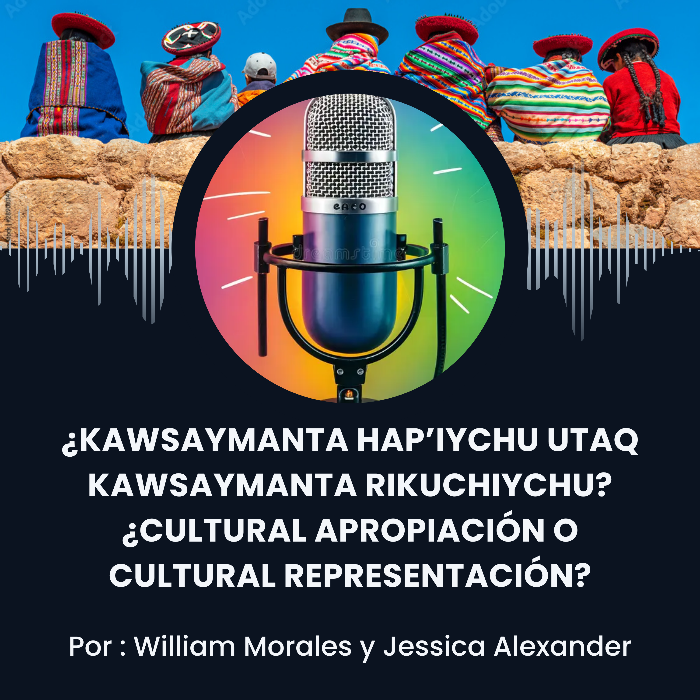

Personal Projects
A collection of software, research, and linguistics projects I've worked on. Where applicable, links to the associated GitHub repository are included.
Linguistics & NLP
Code to Analyze Intensifiers
A custom Python algorithm developed to collect and analyze intensifier data from transcripts of
Spanish dialects. Used to support ongoing sociolinguistic research comparing intensification
patterns across different Spanish-speaking communities. Has been used in multiple conference
presentations and is part of a paper currently in preparation for publication.
Tools: Python, corpus linguistics methods
An Online Dictionary of Louisiana Creole
A web-based dictionary for Louisiana Creole, a critically endangered language. The goal is to
make lexical resources accessible online to support language documentation and revitalization
efforts. Built in collaboration with members of the LSU Creole Club.
Tools: Django, Valdman Dictionary of Louisiana Creole
An Honors Thesis / Capstone
Right now we are thinking about creating a IPA-based, language-agnostic TTS model that could be
used to make TTS for langauges when there are fewer amounts of acoustic data to make a dedicated
TTS model for.
Mentor: Dr. Keith Mills — Expected: Fall 2026–Spring 2026
Spanish Future Tense Research
A Python-based project for analyzing expressions of the future tense in Spanish corpora.
Includes scripts for data cleaning, grammatical tagging, and building structured dataframes from
raw corpus data to support quantitative sociolinguistic analysis.
Tools: Python, pandas
Praat Data Analysis Scripts
A collection of Praat scripts used for collecting and analyzing audio data in a study on
dialectal variation and perception of English sounds. Handles batch WAV file processing and
automates acoustic measurements that would otherwise need to be done manually.
Tools: Praat scripting language
A Short Spanish Podcast about Cultural Representation

Practice for recording/editing videos
Software & App Development
An App for Language Preservation
A collaborative application designed to help heritage language learners and endangered language
communities document and learn their languages. Developed with a small team with a focus on
accessibility and usability for non-technical users.
Tools: Django & React
Multilingual Wordle
A command-line implementation of Wordle that supports any language with entries on Wiktionary —
not just English. Word length and number of guesses are configurable, and word lists are pulled
dynamically from Wiktionary rather than hardcoded, making it easy to play in dozens of
languages.
Tools: Python
Swadesh Word-A-Day
A Python tool that scrapes Wiktionary's Swadesh list appendices across 200+ languages to build a
vocabulary dataset, then sends a daily word-of-the-day push notification via ntfy.sh. Supports
filtering to the 30 most-spoken languages and is designed to run on a cron schedule.
Tools: Python, BeautifulSoup4, ntfy.sh